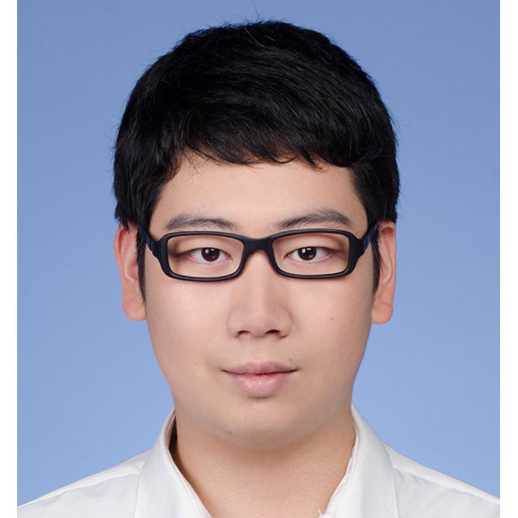

|  |
Department of Mechanical Engineering, Carnegie Mellon University
Email: zhangsiy@andrew.cmu.edu Mobile: +1(412)403-6635 Address: 5000 Forbes Avenue Pittsburgh, PA 15213 U.S.A CV[pdf] |
Quad Mesh Network and Its Applications[pdf]
Zhangsihao Yang
Submitted to IEEE Conference on Computer Vision and Pattern Recogonition , 2019
3D Conceptual Design Using Deep Learning[pdf]
Zhangsihao Yang, Haoliang Jiang, Lan Zou
Computer Vision Conference (CVC), 2019
Data-driven Upsampling of Point Clouds[pdf]
Wentai Zhang, Haoliang Jiang, Zhangsihao Yang, Soji Yamakawa, Kenji Shimada, Levent Burak Kara
Computer-Aided Design, 2018 (submitted)
High Degree of Freedom Hand Pose Tracking Using Limited Strain Sensing and Optical Training[pdf]
Wentai Zhang, Jonelle Z. Yu, Fangcheng Zhu, Yifang Zhu, Zhangsihao Yang, Nurcan Gecer Ulu, Batuhan Arisoy, Levent Burak Kara
Journal of Computing and Information Science in Engineering, 2018 (submitted)
Propose a method to cut the quad mesh into the image and use Convolution Neural Network to extract features of quad mesh
Train an InfoGAN to discover the underneath categorical and continuous information in the quad mesh
Change the input code to generator then generate various kinds of quad mesh
Submit this work to IEEE Conference on Computer Vision and Pattern Recognition
Supported by ‘Functionally-Based Conceptual Design through Data-Driven Shape Analysis for DARPA FunDesign’
Utilize hierarchical Variational Autoencoder in deep learning to discover latent features underneath the 3D voxel data
Design Genetic Algorithm and Computational Fluid Dynamics iterative process to determine optimal shape through simulator reviewing over new structures
Using different type of 3D data, including voxel, point cloud, mesh, and depth map to get different expriment behind different format of 3D data
Won the best student poster at MechE Graduate Research Symposium
Simulated the laminar flame speed of liquid biofuels via CHEMKIN; measured the laminar flame speed by heat flux method
Analyzed the stimulated data and experimental data; finished a 20,000-word paper
Use BiOBr as the photo-catalyst and recycle it by free settling
Design the dynamical system and automatic control system to monitor sewage in real time so as to control the sewage flow automatically and to save manpower
Won the second prize in the Energy Saving & Emission Reduction Contest for National College Students
Obtained a Chinese patent with this system (patent number: 201510471612)
Conducted research on the application, main scientific problems, mechanism and degradation process of volatile organic compounds (VOCs) purification treatment by low-temperature plasma technology
Carried out experiments to determine three VOCs and organized the report; Evaluation: “Excellent”
G. Xiao, T. Yang, B. Shi, Z. Luo, C. Li, Z. Yang, M. Yan, T. Hu, S. Song, K. Sun, J. Wu, “A method and system using solar energy to treat sewage by spotlights and frequency division utilization”, Publication No: 201510471612.3
Set up the grading rubric; Graded homework; Counselled project teams with feasibility and topic choosing and possible; Held a recitation about GAN and CycleGAN; Held office hour
Design an assignment to implement GAN and CycleGAN
Designed the dynamical system and automatic control system to monitor sewage in real time so as to control the sewage flow automatically and to save manpower
Second Prize in the 8th National University Student Social Practice and Science Contests on Energy Saving & Emission Reduction (ranking 161 out of 2534), Second Designer
Carnegie Mellon University
02/2018 |
|
Zhejiang University
06/2016 |
|
11/2015 |
|
08/2015 |
|
11/2014 |
|
11/2013 |
|
|
|
|